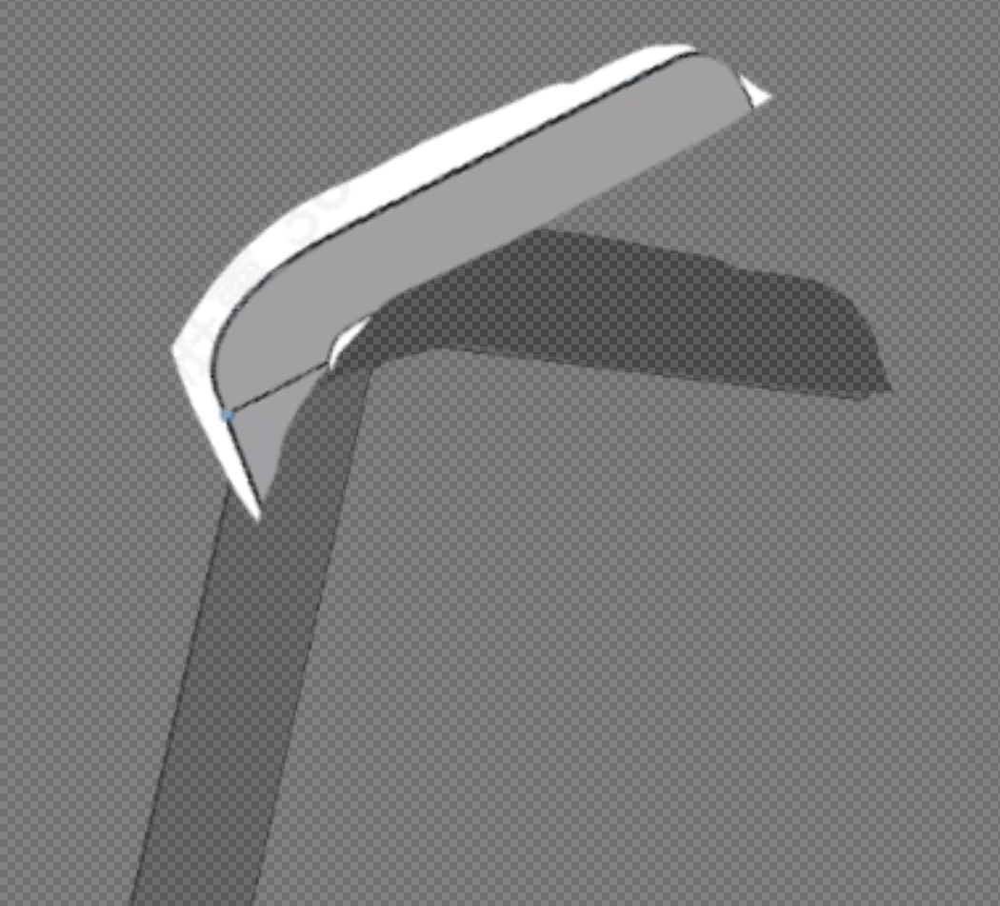
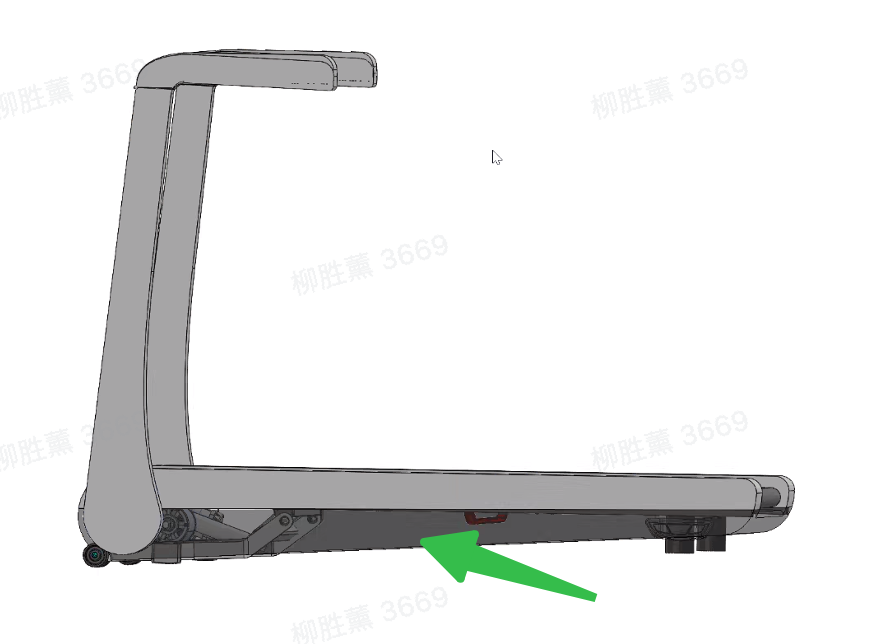

底部换材质，
把手在肩部折叠。
主推：暖灰机身 × 深石墨铝饰板；把手采用固定半片与活动半片，同轴重叠，复用齿轮按钮的按压解耦原理。
新增设计提议 · 两张概念效果图与一组交互原理示意 · 待用户评审，尚未改入坡形装配模型
返回整组评审 ↗01 / 底部饰板：三套可比较的搭配
保留浅灰跑台侧边框，仅替换其下面的长条饰板。主壳实际材料尚未核实；以下先以相同的浅暖灰外观比较。

| 搭配 | 材质 / 工艺提议 | 看起来怎样 | 深化要点 |
|---|---|---|---|
| A · 主推 深石墨 | 铝板成形 → 细喷砂 → 深灰阳极氧化 | 低光泽金属底边；降低底盘的视觉存在感，衬托暖灰上壳。 | 下边缘翻边收口；两端用独立端盖衔接。背面隔离垫与可拆紧固，打样检查异响、色差和磕碰。 |
| B · 备选 暖银视觉 | 铝板成形 → 沿长度细拉丝 → 本色阳极氧化 | 金属感更明确；上下灰度接近，靠拉丝与反光区分。 | “暖银”为视觉目标，实际色相需样板；拉丝方向与左右件一致，端部避免外露切口。 |
| C · 备选 深暖灰 | PC+ABS注塑 → 本体着色 → 模具细纹 | 更柔和的哑光包覆；两三道宽浅凸筋呼应长条方向。 | 若主壳也是塑料，此案主要是色彩与纹理区分。长件翘曲、筋印、分段与拆装方式需核对。 |
饰板固定在对应的底部架体上，不能用一整条硬板跨接相对运动的部件。前后转轴、抬升架和支脚保留活动边界；承力仍由原骨架承担。
02 / 两片式把手：固定肩部 + 活动根部
把图中斜切接缝和尖角断口，改为以转轴为圆心的圆弧搭接。固定半片接立柱，活动半片接握把，两片根部沿轴向错层重叠；外侧按钮内凹，收在关节轮廓里。

接立柱，藏固定齿盘
金属内骨架承接轴与固定盘，外壳做圆弧包边，避免原图下垂的三角尖角。
接把手，围绕同一根轴转
内骨架用轴肩 / 轴套限住横向位置。内部滑动盘可轴向移动，但通过导向键随把手转动。
按下退盘，对齿再锁
按钮经同轴推杆推动滑动盘退开；松手由弹簧推回。固定盘、滑动盘的齿面面对面啮合。
03 / 试一下按钮与对齿的关系
抽象运动示意：用既有30齿 / 每档12°演示锁定逻辑，0–120°只表示局部动作。实际坡形轴位、齿数、外形包络与收折终点尚未确定。
两片齿盘接合；把手不能转动。
松开时若未对齿，应保留“待接合”；不能把松手直接等同于锁住。
两侧若由同一上架连接，应采用两侧同轴锁止 + 共用按钮联动释放：可通过横梁内的推拉机构 / 拉索同步退盘，单侧不可先锁住造成扭拧。此为新增结构提议，需检查双侧释放行程与复位一致性。
复用的是你已有的“按钮—轴向退盘—弹簧回位”原理。先确定坡形所需的折叠终点，再匹配齿数、齿深与按钮行程；不直接沿用曜影的齿盘直径和行程。实际承载、止挡、间隙、防夹与两侧同步仍待装配验证。
04 / 对照原图与工艺依据


表面工艺参考：AAC · 铝阳极氧化表面及机械预处理；Covestro · Bayblend PC+ABS注塑与外观表达。工艺存在不等于本零件已通过制造验证。